Ein Atelier voller Farbe, Geschichten und Struktur
Willkommen in meiner Welt aus Farbe, Struktur und Licht.
Seit über 35 Jahren übersetze ich Natur, Reisen und Stimmungen in Bilder – von großformatigen Unikaten bis zu liebevollen Illustrationen für Kinder und Erwachsene. Heute bin ich aktiv als Mitglied der Künstlerpalette Unterschleißheim und im Künstlerkreis Neuried. Als Dozentin für Acrylmalerei unterrichte ich Erwachsene an diversen Institutionen im Raum München.
Meine Malerei bewegt sich zwischen Abstraktion und Figuration. Mich faszinieren architektonische Formen, das Spiel von Licht und Schatten und die stille Begegnung von Menschen im Raum. Schicht für Schicht baue ich meine Bilder auf, bis eine Stimmung entsteht, die den Betrachter einlädt, innezuhalten.
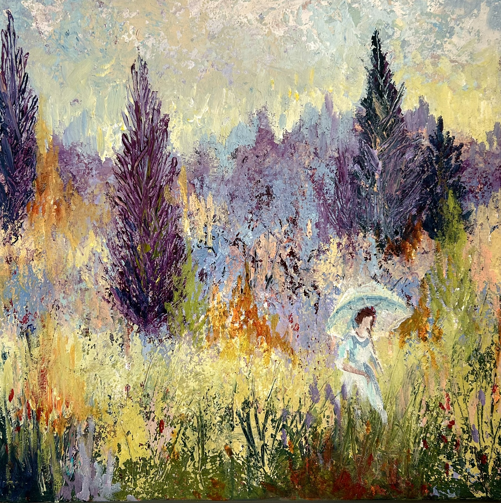
„Die Ausübung der Kunst ist ein großer Teil meines Ichs, es ist mir die Luft, mit der ich atme.“Clara Schumann
Meine Arbeit
Mein Beruf ist Grafikerin, aber bereits vor und während des Studiums habe ich mich mit Illustration und Malerei beschäftigt.
Neben meiner Anstellung als Layouterin bekam ich die Möglichkeit, 20 Jahre für einen Verlag in Augsburg wöchentlich Kinderillustrationen anzufertigen.
Durch Malkurse bei der Münchner Künstlerin Eva Großhennig begann das Interesse an Acrylmalerei und Abstraktion.
Später kamen andere Themen wie menschliche Figuren, Landschaften und kubistische Formen hinzu, bis hin zu pflanzlichen und tierischen Motiven.
Ein anderer Teil meiner derzeitigen Arbeit sind Illustrationen, die ich für verschiedene Druckerzeugnisse einsetze, wie Jahreskalender, Karten, Tassen, Adventskalender.…
Inspiriert werde ich von der Beobachtung meiner Umwelt, von Landschaften, Reisen, Stimmungen in den verschiedenen Jahreszeiten.
Vita
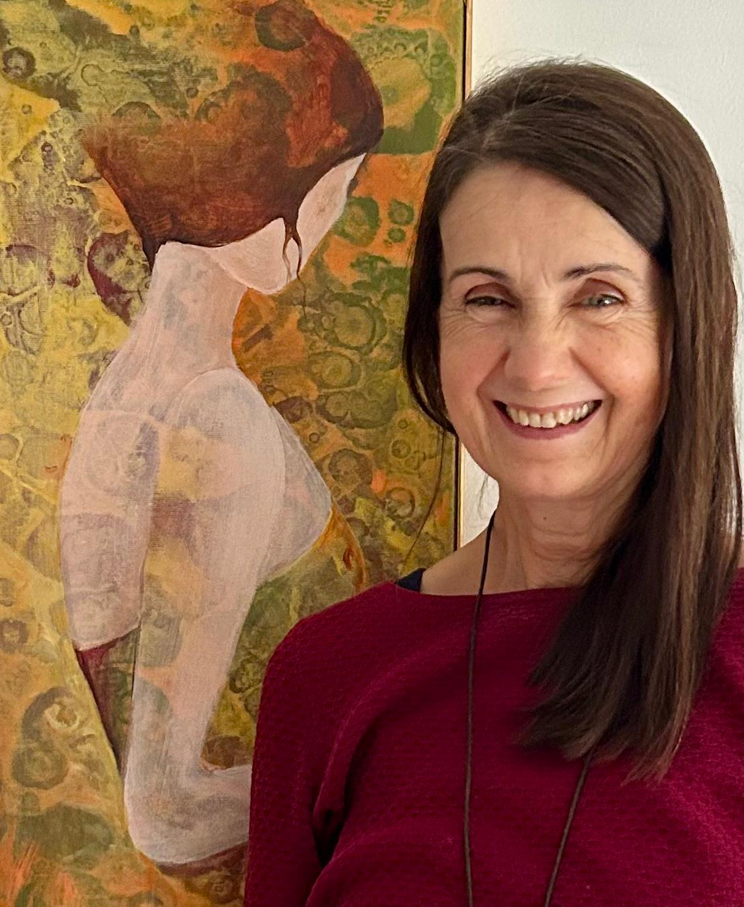
- Geboren in Marburg/Lahn (deutsch-französische Staatsbürgerschaft)
- Abitur, Studium für Kommunikationsdesign (FH Augsburg)
- Studium der Malerei an der Akademie Roederer, Paris
- Diplom für Kommunikationsdesign an der FH Augsburg
- Layouterin und Illustratorin einer Jugendzeitschrift, Weltbild; Signets und Logos für Geschäfte und Firmen
- Regelmäßige Einzel- und Gruppenausstellungen
- Kurse für Acrylmalerei an unterschiedlichen VHS Institutionen und im ASZ München Solln
- Mitglied im Künstlerkreis Neuried
- Mitglied der Künstlerpalette Unterschleißheim (ART, gegründet 1990)
Malerei
Bitte klicken Sie auf eine Kategorie für weitere Werke.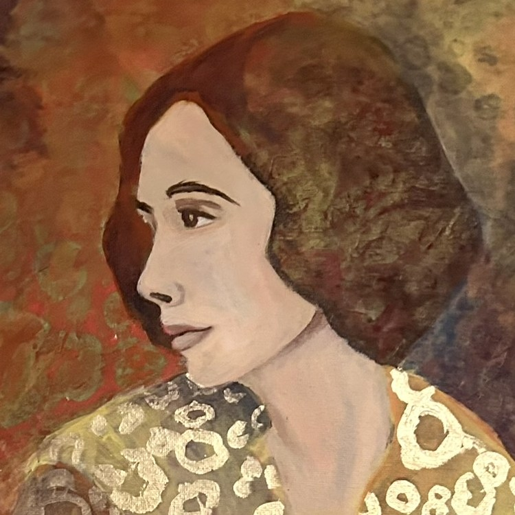
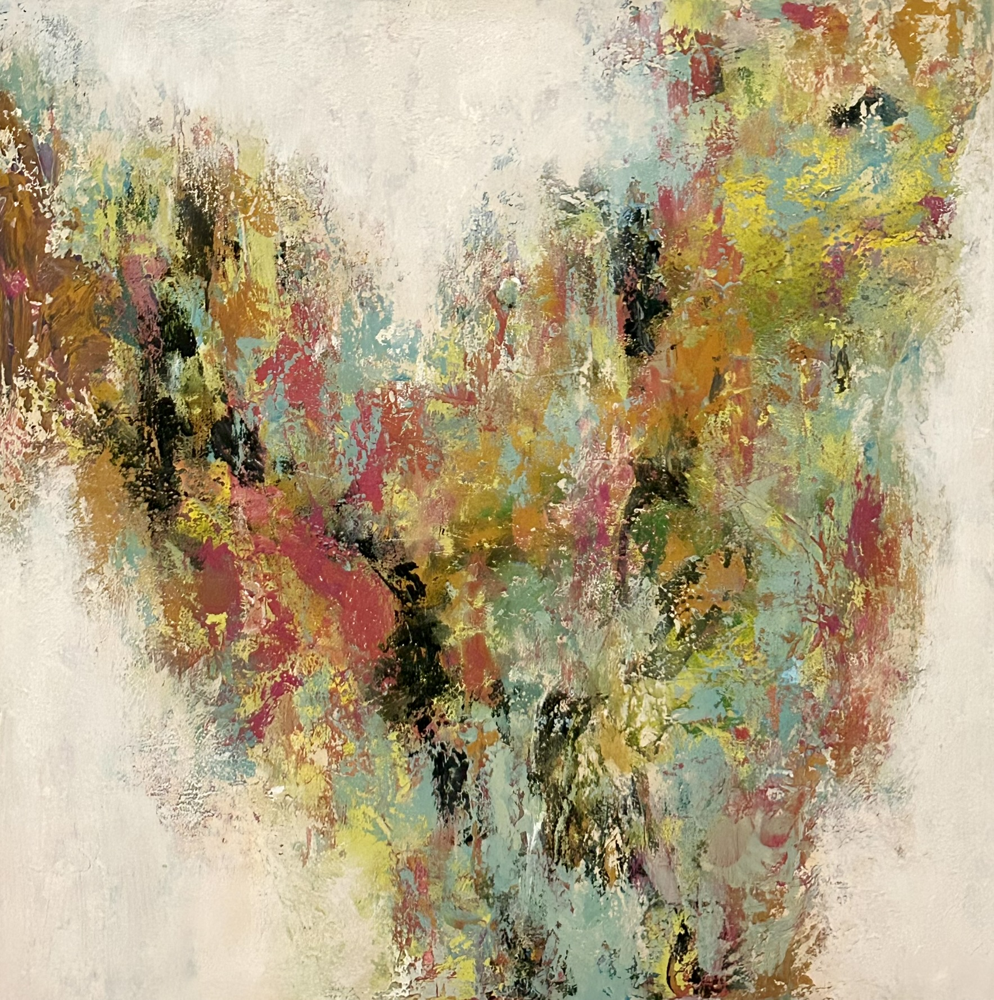
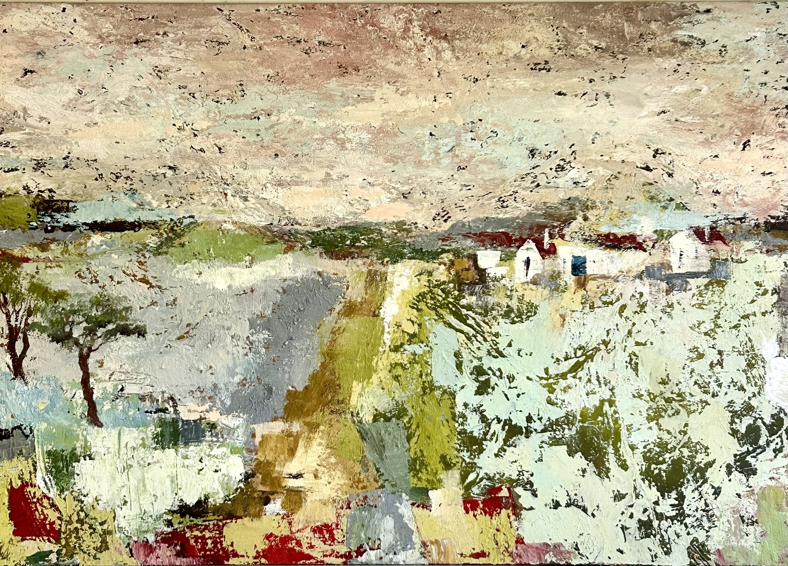
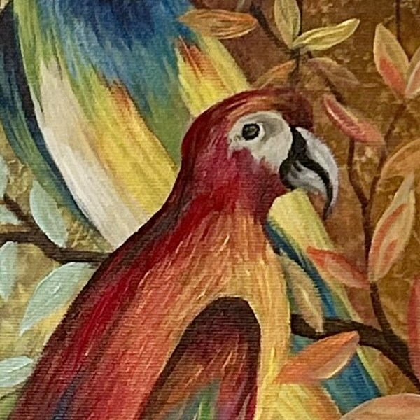
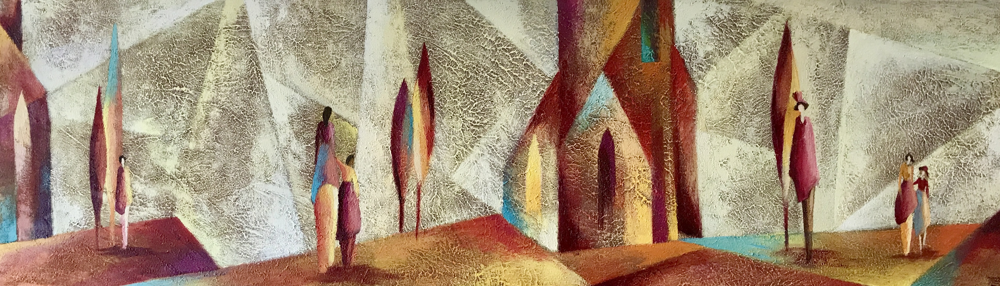
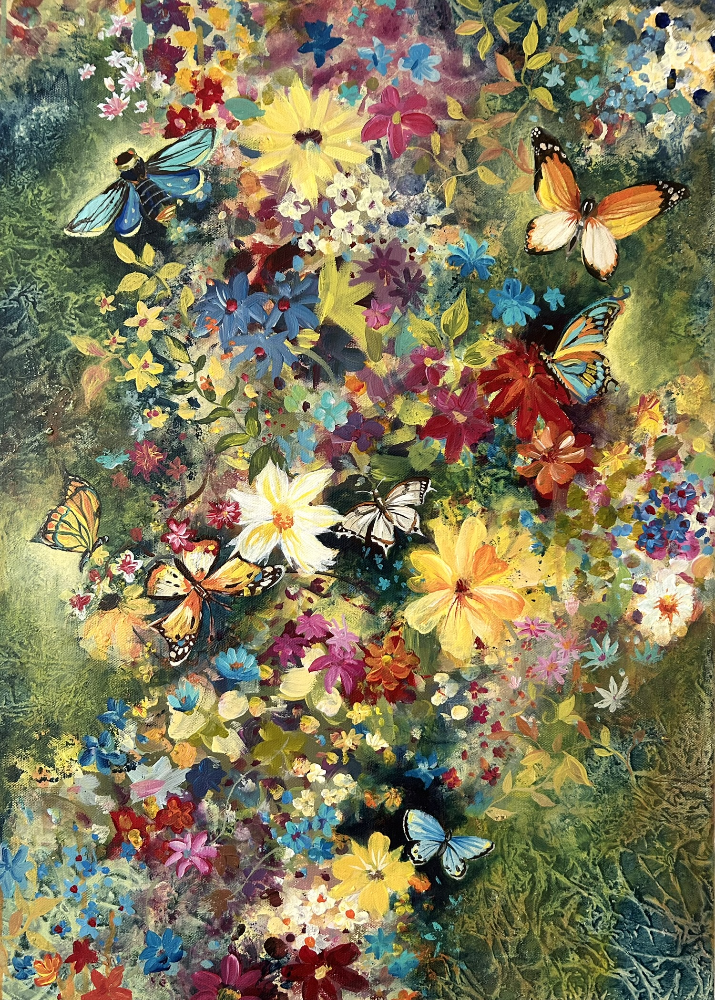
Illustrationen, Karten & Kalender
Ich gestalte jedes Jahr einen neuen Jahreskalender, Adventskalender und andere Druckerzeugnisse. Die Themen dafür denke ich mir aus – oft sind es Betrachtungen aus dem täglichen Leben.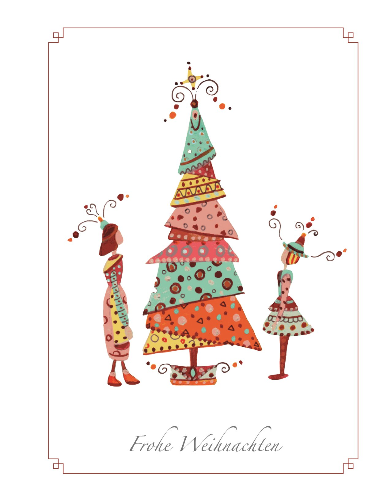
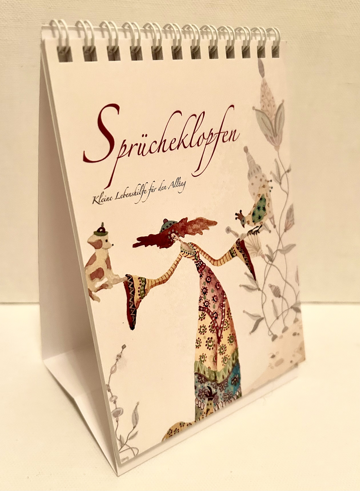
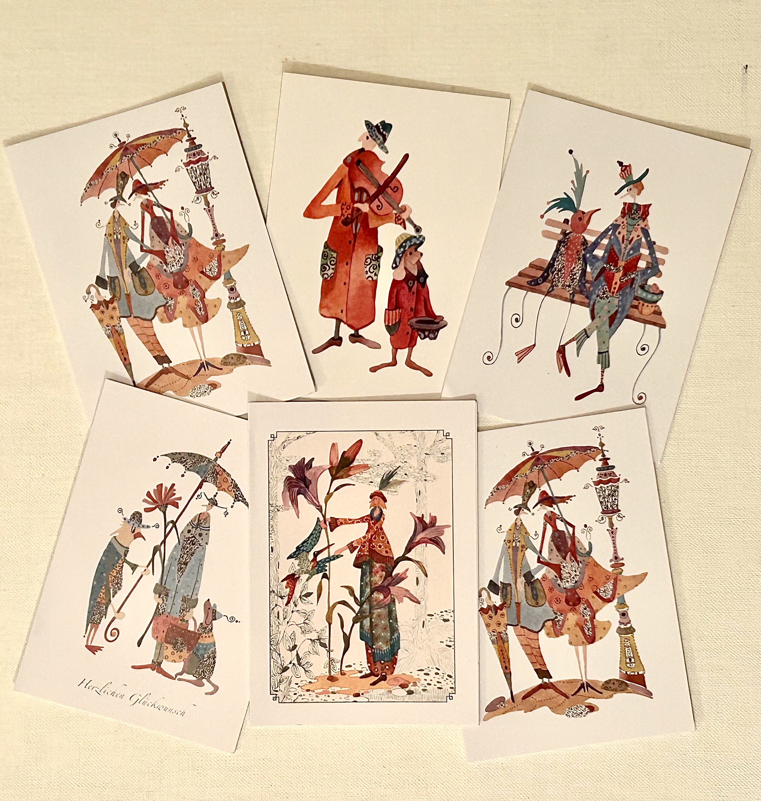
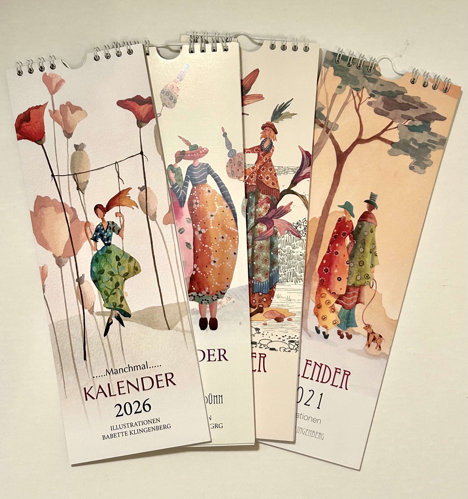
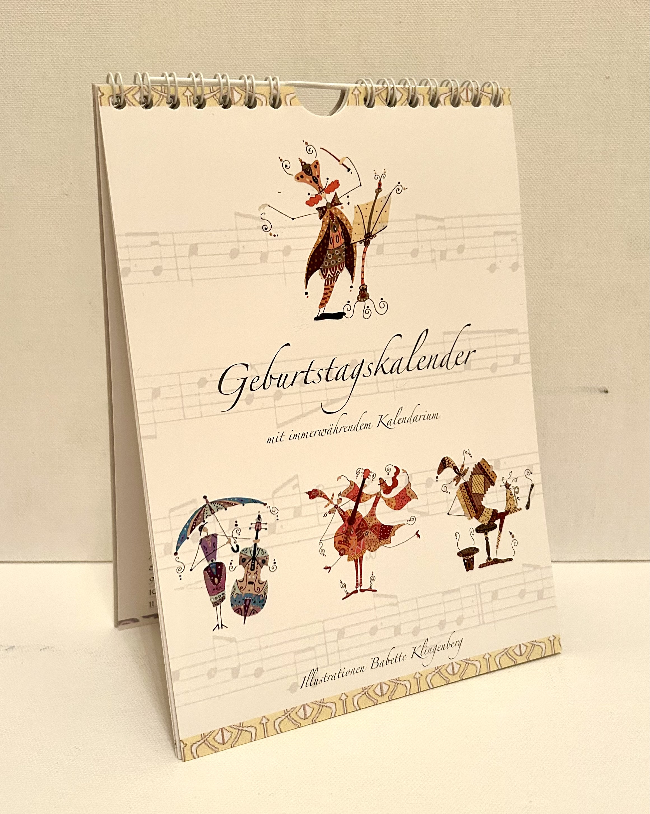
Durch eine große Farbpalette, viele Muster und teilweise schwungvolle Bewegungen der Figuren versuche ich, Leichtigkeit auszudrücken. Mein Anliegen ist es, dem Betrachter ein kleines Lächeln zu entlocken und ihn für einen Moment in eine hoffnungsvolle Welt zu entführen.
Meine Illustrationen – sei es als Klappkarte, Jahreskalender, Rezeptvorschläge oder Mutmachsprüche – können Sie gerne bei mir bestellen. Da sich das Sortiment immer mehr erweitert, informiere ich Sie auf Anfrage auch gerne über die neuesten Erzeugnisse.
E-Mail: babetteklingenberg@web.de · Tel.: 0160 / 5602862
Ausstellungen
WerkschauKontakt
Babette Klingenberg
Stadionstraße 82
85716 Unterschleißheim
Tel: 0160 / 5602862
E-Mail: babetteklingenberg@web.de
Impressum
Angaben gemäß § 5 TMG
Babette Klingenberg
Stadionstraße 82
85716 Unterschleißheim
Telefon: 0160 / 5602862
E-Mail: babetteklingenberg@web.de
Inhaltlich verantwortlich gemäß § 18 Abs. 2 MStV: Babette Klingenberg (Anschrift wie oben)